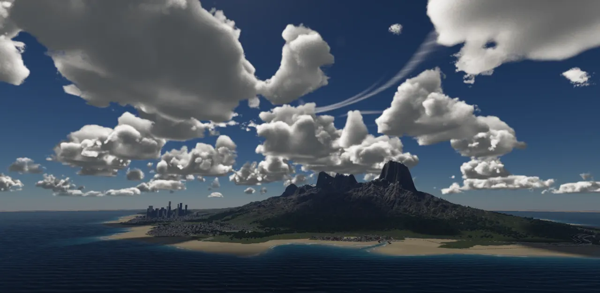
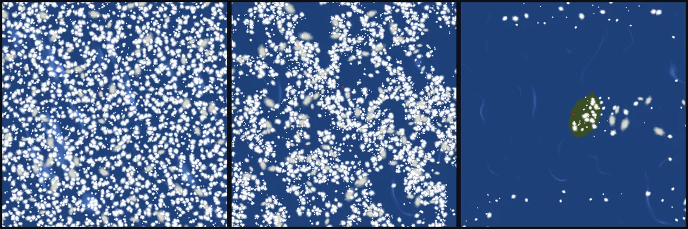
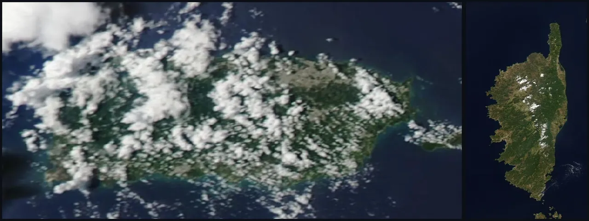
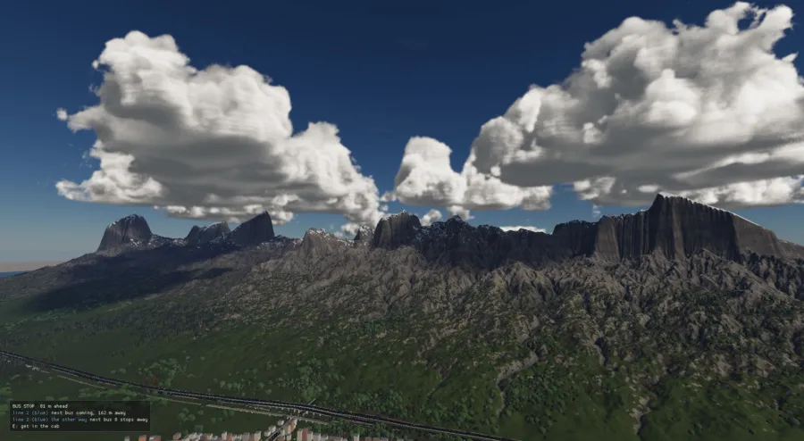
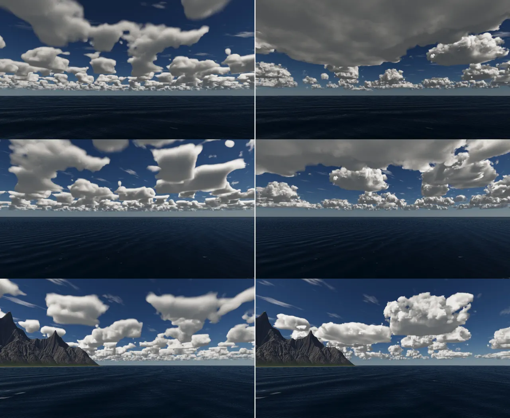
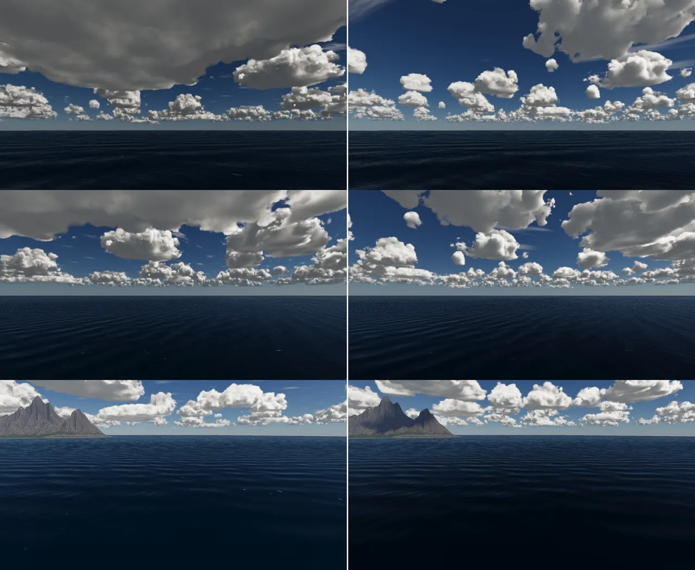
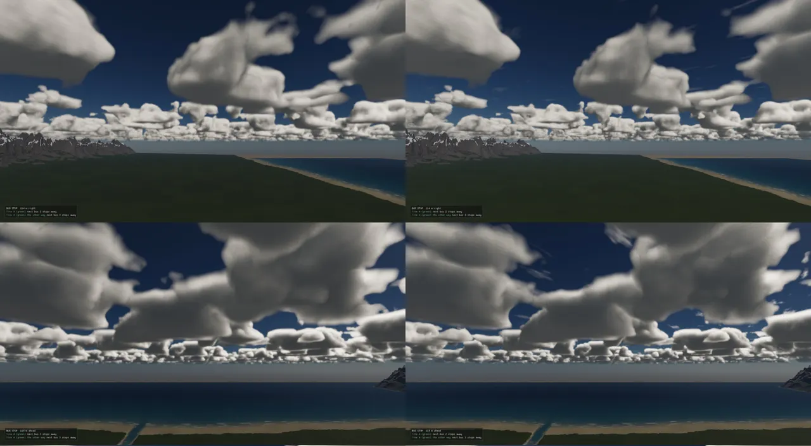
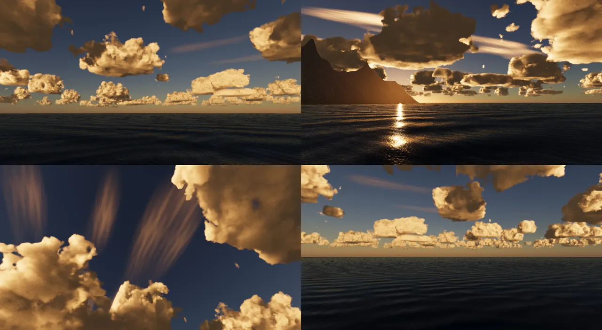
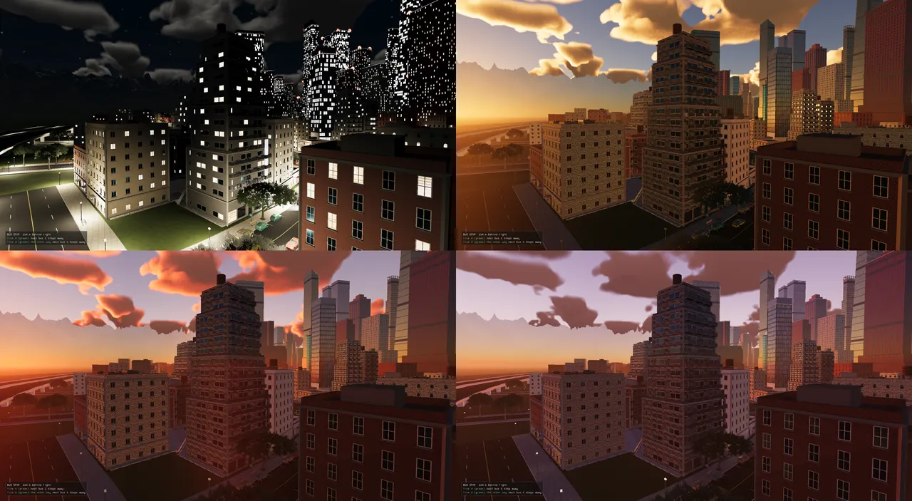
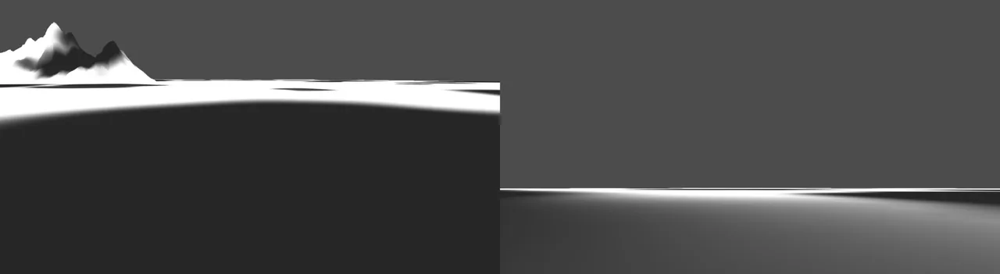

The sky's clouds are a volume. Every frame a shader marches each pixel's ray through a layer of noise, kilometres deep, and adds up the light the cloud scatters toward the camera. Where the clouds stand is decided before that, on the CPU. A weather map, baked round the camera, places every cloud as a cell of one of four types, with its own size and its own height. The 3D noise only shapes the inside of each cell. The same map shades the ground under the clouds.

Whose idea. The design follows Guerrilla Games' Nubis cloud system for the Decima engine (Horizon Zero Dawn, then Horizon Forbidden West). Andrew Schneider described it in the SIGGRAPH Advances in Real-Time Rendering talks: "The Real-Time Volumetric Cloudscapes of Horizon Zero Dawn" (2015) and "Nubis: Authoring Real-Time Volumetric Cloudscapes with the Decima Engine" (2017). The code and the ADRs cite these as "Schneider 2015/2017". From them come the weather map with a type channel, the height profile per type, the Perlin-Worley base noise eroded by a Worley detail noise, the anvil, the light march in a cone, and the wispy-to-billowy erosion. The multiple-scattering approximation is Wrenninge's (credited in CREDITS.md). Real satellite views from NASA were used to judge the result (see The reference).
A cumulus cloud is a few hundred metres to a few kilometres across. A sky full of them reaches 30 km to the horizon, and some are seen from inside. Clouds are not surfaces, so a triangle mesh cannot draw them. They are a density field that light passes through, scatters in, and is partly absorbed by. The standard real-time answer is a ray march: walk each pixel's ray through the cloud layer in steps, read the density at each step, and add up light and transmittance (the fraction of light that gets through) as you go.
That leaves three hard parts:
Who feeds whom. The CPU decides where clouds are and how they drift. The GPU shapes, lights and averages them, then composites them into the HDR scene before the post passes, so bloom and the other passes see the clouded scene.
Each frame, in system order:
VolumetricCloudParams: coverage, density, noise scale and the range of cloud types the weather
spreads over. Under the physical sky it also works out the light that reaches the cloud deck (see
Lighting). The weather itself is on the weather page.setCloudMap.CloudUniforms and records three fullscreen
passes after the scene pass: the march, the resolve (the history) and the composite.The level turns the clouds on with environment.clouds in its JSON (coverage,
density, noiseScale, wind, steps, lightSteps,
phaseG, far, ambient, detailStrength, wisps,
cirrus, typeRange, and bottom/top, which matter only without
clouds.lua: with it, the deck spans the types). Everything about the kinds of cloud is in
assets/scripts/clouds.lua.
A cloud type is a kind of cloud: where it stands, how its density changes with height, how big its cells are. There are exactly four, ordered from mild to severe along a type axis from 0 to 1 (slots 0, ⅓, ⅔ and 1). A weather names a range on that axis. Fair weather spreads its clouds over 0.47 to 0.75, mostly cumulus and a little stratocumulus. A storm spreads over 0.60 to 1.00, cumulus to cumulonimbus. Since ADR-0386 the types are data, in the same file as the weathers (ADR-0388):
types override is gone)
assets/scripts/clouds.lua types = {
{ name = "stratus", base = 500, top = 1100, profile = { 0.00, 0.20, 0.55, 1.00 }, density = 0.70, erosion = 0.40,
anvil = 0.0, radius = { 4000, 12000 }, aspect = 2.2, low = 0.7 },
{ name = "stratocumulus", base = 900, top = 1700, profile = { 0.00, 0.15, 0.50, 0.95 }, density = 0.85,
erosion = 0.70, anvil = 0.0, radius = { 800, 2000 }, aspect = 1.7, low = 0.6 },
-- fair-weather cumulus: flat bases at ~1.2 km, the small ones shallow (humilis), the big ones a kilometre deep;
-- full only low down, thinning over most of its height, so it domes (with the footprint narrowing as it rises)
{ name = "cumulus", base = 1200, top = 2700, profile = { 0.00, 0.06, 0.30, 1.00 }, density = 1.00, erosion = 1.00,
anvil = 0.0, radius = { 250, 1300 }, aspect = 1.25, low = 0.3 },
{ name = "cumulonimbus", base = 900, top = 9000, profile = { 0.00, 0.04, 0.85, 1.00 }, density = 1.60,
erosion = 0.60, anvil = 1.0, radius = { 2500, 6000 }, aspect = 1.1, low = 0.6 },
},
The profile gives the density by height as four fractions of the type's span. Density rises from 0 at
[1] to full at [2], holds until [3], and falls to 0 by [4],
with a smoothstep on each ramp. radius is a cell's footprint, half across. aspect
stretches it along its own heading, so the stratiform sheets are elongated. low is how tall the
smallest cell grows, as a fraction of the type's height, and the biggest cells reach top.
The four types to scale, drawn from the numbers in clouds.lua at the pinned commit. Each shape's width is its profile. Cumulus (outlined blue) is full only over the bottom 30 % of its height and thins above, which, with the footprint narrowing (below), makes it a dome. The dashed line is how high the smallest cells of that type reach.
loadCloudsSource (scripting/clouds_lua.cpp) is strict. It wants exactly four types,
top > base, 0 < radius min ≤ max, aspect ≥ 1 and
0 < low ≤ 1, and every field of every weather (ADR-0388: "a state's numbers are its whole
definition"). It is read once, through ensureCloudsLoaded. If the file is missing or does not read,
the plain book stands: the built-in cumulus in all four slots, and the old noise-placed clouds, because
CloudMapSystem bakes no map without a loaded book.
The book also carries the knobs that are not per type: shape_scale (3, the shape noise's frequency
against the level's), shadow (0.85), organisation (1), size_skew (2.2),
and map = { extent = 80000, size = 1024, rebuild_m = 8000 }. That makes an 80 km square of
1024² texels, about 78 m a texel.
The map is a square of the sky round the camera, in air coordinates: the world position plus how far the clouds have drifted. Because the map moves with the air, the wind alone never forces a rebake. Each texel holds four bytes:
| Channel | Holds | Read by |
|---|---|---|
| R | the footprint, 0 (clear air) to 1 (a cloud's heart): the coverage the march cuts at | march, shadow |
| G | the cell's type, its slot on the axis (0, ⅓, ⅔, 1) | march, shadow |
| B | the cell's own top, as a fraction of its type's height (small cumulus are shallow) | march, shadow |
| A | the cirrus: the 9 km veils' cover there | march (the cirrus sheet) |
Every cloud is a cell: a soft ellipse with a noisy rim, of one type, at its own size. Each type scatters its
cells over its own grid. The grid spacing is 2.6 × the type's largest radius × √aspect, so a cell never reaches
further than one square from its own. How many cells a square holds, and where they sit, come from a hash of the
square's indices and the seed (hash.h's hashCell). Nothing tiles, and a cell's fate never depends on
where the map's window is. Two bakes therefore agree exactly where they overlap, which is what
cloud_map_bakes_agree_where_they_meet tests.
The coverage the weather asks for is meant to be the share of the sky under cloud. Cells dropped at random overlap, so the share they cover is not simply their total area. For a Poisson field (points scattered independently at a mean density λ per m²) of footprints of area A, the uncovered share is e−λA. To cover c of the sky you need −ln(1 − c) footprints' worth per square metre. That is the bake's starting point:
// THE CELLS AS A POISSON FIELD: footprints dropped at random cover 1 - exp(-cells per m^2 x a footprint's area) // of the sky, so the coverage asked for is reached exactly by -ln(1 - coverage) footprints' worth per m^2, shared // by the types as the weather's range spreads them -- an overcast's stratus overlapping into a deck // ...and where the field bunches them, the dense parts overlap and saturate: so the footprints' worth per m^2 is // solved over the field's samples, the mean of 1 - exp(-lambda x field) brought to the cover asked (bisection) double lambdaArea = -std::log(std::max(1e-4, 1.0 - static_cast<double>(cover))); if (org > 0.0 && cover > 0.0f) { double lo = 0.0, hi = 20.0; for (int it = 0; it < 40; ++it) { const double mid = 0.5 * (lo + hi); double got = 0.0; for (double f : samples) got += 1.0 - std::exp(-mid * f); (got / samples.size() < cover ? lo : hi) = mid; } lambdaArea = 0.5 * (lo + hi); }
That amount is shared between the four types by cloudTypeWeights, each slot's overlap with the
weather's range. It is then turned into a mean number of cells per square, using the type's mean footprint
area. A cell's footprint counts as cloud only where it is above 0.5, and the soft edge and the warp make that
about 0.41 of the ellipse (kAreaShare, measured by test_cloud_map). A square holds at most 16
cells. Measured in ADR-0386: asking for 0.05, 0.22 and 0.45 gave within a few points of those on six seeds, and an
overcast's stratus asked to cover 0.85 overlapped into a deck at 0.84. Since ADR-0389 the test holds every seed to
within 0.05 + a quarter of the ask.
One texel of the bake (sky/cloud_map.cpp). The bake runs row by row on the calling thread, which is CloudMapSystem's own worker, not the shared job pool whose rows belong to the frame.
for (int m = 0; m < count; ++m) {
const CloudTypeSpec& t = *g.type;
const uint32_t o = 8u * static_cast<uint32_t>(m);
const double rn = roll(ci, cj, g.salt, o + 1);
const double r = cellRadius(t, rn, book.sizeSkew);
const double reach = r * t.aspect * 1.5;
const double cx = (ci + roll(ci, cj, g.salt, o + 2)) * g.spacing;
const double cz = (cj + roll(ci, cj, g.salt, o + 3)) * g.spacing;
const double dx = x - cx, dz = z - cz;
if (dx * dx + dz * dz > reach * reach) continue;
const double ang = roll(ci, cj, g.salt, o + 4) * PI;
const double ca = std::cos(ang), sa = std::sin(ang);
const double u = (dx * ca + dz * sa) / (r * t.aspect), v = (-dx * sa + dz * ca) / r;
// the rim warped by two octaves of noise at the cell's own scale: a cloud, not a disc
const double warp = field01(rimNoise, x / (0.7 * r) + 11.0 * g.slot, z / (0.7 * r)) +
0.5 * field01(rimNoise, x / (0.3 * r) - 7.0 * g.slot, z / (0.3 * r) + 3.1) - 0.75;
const double d = std::sqrt(u * u + v * v) * (1.0 + 0.45 * warp);
const double f = 1.0 - smoothstep(0.25, 1.0, d); // (a long soft edge: the march narrows it as the cell rises into a dome)
if (f > best) {
best = f;
slot = g.slot;
height = static_cast<float>(std::clamp(
t.low + (1.0 - t.low) * rn + 0.15 * (roll(ci, cj, g.salt, o + 5) - 0.5), 0.15, 1.0));
}
}
A cell's radius is skewed to the small (ADR-0389): the radius is the roll raised to size_skew
(2.2) and spread over the type's range, giving many small cumulus and a few big ones, as a real field has. A
cell's height follows its size: low + (1 − low) × roll, with a little jitter, so the small ones are
shallow (cumulus humilis) and the big ones reach the type's top.
A Poisson field is even: every part of the sky looks like every other. Glenn, looking at the first map from above
with the new cloudmap command: "That looks too dense and doesn't look like a real weather system …
I'd imagine there would be swirls and eddies in the wind that would guide the clouds." ADR-0389 adds a slow
moisture field that scales how many cells each square holds. It is stretched along a sweep (the direction
the cirrus streaks lie, picked from the seed) into streets, and read through two scales of curl noise. Curl
noise is the 2D curl of a noise field, (∂N/∂y, −∂N/∂x). It is divergence-free, so the flow swirls and shears
what it carries but never piles it up or thins it out.
// THE EDDIES (Glenn, 2026-11-08: "swirls and eddies in the wind that would guide the clouds"): the field read // through a swirling flow -- the curl of a slow noise (divergence-free: it turns and shears, never piles up), two // scales, so the fields and the cirrus wrap round eddies of ~10-30 km. (Part C's wind will be the real one.) const Noise eddyNoise(hashPair(in.seed, 0xEDD1u)); auto swirl = [&](double& x, double& z) { const double scales[2] = {30000.0, 11000.0}, amps[2] = {4500.0, 1500.0}; for (int o = 0; o < 2; ++o) { double cx = 0.0, cz = 0.0; eddyNoise.curl2(x / scales[o] + 17.3 * o, z / scales[o], cx, cz); // (Noise::curl2: the shared curl) x += amps[o] * cx; z += amps[o] * cz; } }; auto rawField = [&](double x, double z) { swirl(x, z); const double a = x * sweepX + z * sweepZ, b = -x * sweepZ + z * sweepX; const double nv = 0.6 * field01(airNoise, a / 24000.0, b / 8000.0) + 0.4 * field01(airNoise, a / 9000.0 + 31.7, b / 3500.0); return smoothstep(0.42, 0.72, nv); };
The field's mean is taken over a fixed 200 km round the world origin, not over the map's window, so a cell's fate still never depends on where the map is. Where the field bunches cells they overlap more, so the simple −ln(1 − c) would come out short. The footprints' worth per m² is instead solved by bisection over the field's 64 × 64 samples, until the mean of 1 − e−λf equals the cover asked. The tests then gave 0.19–0.23 for an ask of 0.22. The organisation gives way as the cover passes 60 %, so an overcast is even. The cirrus veils are swirled through the same eddies.

cloudmap <path.png>; the camera is the red dot). Left: ADR-0386's
even Poisson field, the one Glenn found "too dense". Middle: ADR-0389's eddies, the cells in fields and lines
with clear air between. Right: ADR-0390, the map reading the simulated weather over island_8, with cumulus over
the land and a plume downwind. Lab captures from 2026-11-08.Noise, however swirled, does not know where the land is. ADR-0390 put a 2D weather simulation over the level and
its sea, with wind, lift, humidity and cloud on a grid of 250 m cells. That system is described on the
weather page. The cloud side of it is small. When a WeatherField exists,
the bake reads it instead of the coverage knob and the moisture field:
if (in.field) {
// the simulation's cloud here, as footprints' worth per m^2, shared by the types its convection leans
// to (this type's share of a narrow range round that point on the axis)
const double wx = ax - in.driftX, wz = az - in.driftZ;
const double c = std::min(0.97, static_cast<double>(in.field->coverAt(wx, wz)));
const double t = in.typeLo + (in.typeHi - in.typeLo) * in.field->convectionAt(wx, wz);
const std::array<float, 4> share = cloudTypeWeights(static_cast<float>(t - 0.08), static_cast<float>(t + 0.08));
m = -std::log(1.0 - c) * share[static_cast<std::size_t>(k)] * g.spacing * g.spacing / meanAreaOf[k];
// ...
// THE SIMULATION's SOLID CLOUD: where it says the sky is closed, one continuous mass -- the structures
// no scatter of cells makes (a merged afternoon mass over a mountain, a front's deck)
if (in.field) {
const double wx = x - in.driftX, wz = z - in.driftZ;
const double mass = smoothstep(0.55, 0.92, static_cast<double>(in.field->coverAt(wx, wz)));
if (mass > best) {
best = mass;
const double t = in.typeLo + (in.typeHi - in.typeLo) * in.field->convectionAt(wx, wz);
slot = static_cast<float>(std::lround(std::clamp(t, 0.0, 1.0) * 3.0)) / 3.0f;
height = 1.0f;
}
}
The test weather_sim_places_the_maps_clouds_over_the_land (tests/test_weather_sim.cpp) bakes a
64 km map from a made island in a made sea on a fair afternoon. It checks that more than 15 % of the island is
under cloud and less than 3 % of the sea upwind.
The reference. The target for all of this came from real satellite imagery: NASA Worldview's MODIS Aqua Corrected Reflectance (true colour) of Hawaii, Puerto Rico, the Canary Islands and Corsica, on summer afternoons in 2022–2023 (CREDITS.md: "measured, not shipped"; NASA imagery has no copyright restrictions). ADR-0390 reads from them that the organiser is the land: cumulus over sunlit land and high ground (about a third of Puerto Rico's land, in 1–3 km cells), about 3 % over the sea round it, a summit above the trade inversion clear, and plumes and wakes downwind.


The renderer used to integrate the clouds' drift itself, out of the engine's reach. The map has to be laid out in
the same air the march samples, so ADR-0386 moved the drift into CloudMapSystem. The deck's
wind is its speed in a 6 m/s ground wind, scaled by the weather's actual wind
(ADR-0337's one wind):
// THE DRIFT: the deck's own `wind` is its speed in a 6 m/s ground wind
const double speed = static_cast<double>(vc.wind) * (std::max(ctx.renderer.windSpeed, 0.0f) / 6.0);
const double dirX = ctx.renderer.windDir[0], dirZ = ctx.renderer.windDir[1];
if (pinnedWindTime() >= 0.0) {
driftX_ = dirX * speed * pinnedWindTime();
driftZ_ = dirZ * speed * pinnedWindTime();
} else {
const double dt = std::clamp(ctx.frameDelta, 0.0, 0.25);
driftX_ += dirX * speed * dt;
driftZ_ += dirZ * speed * dt;
}
vc.driftX = driftX_;
vc.driftZ = driftZ_;
The system then copies the four types onto the params and sets the deck's bottom/top
to the lowest base and highest top among the types the weather spreads over. With storms in range the deck reaches
9 km. A bake starts on a std::async worker when there is no map yet, when the camera has drifted
rebuild_m (8 km) through the air, when a new simulated field arrived more than 10 s after the last
bake, or when the weather moved more than 0.01 on any input at least 1.5 s after the last bake:
const double moved = std::hypot(in.centreX - built_.centreX, in.centreZ - built_.centreZ);
const bool weatherMoved = std::fabs(in.coverage - built_.coverage) > 0.01f ||
std::fabs(in.typeLo - built_.typeLo) > 0.01f || std::fabs(in.typeHi - built_.typeHi) > 0.01f ||
std::fabs(in.cirrus - built_.cirrus) > 0.01f ||
in.seed != built_.seed;
const bool fieldMoved = in.fieldVersion != built_.fieldVersion && sinceBake_ > kMinSecondsForField;
if (!baking_ && (!haveMap_ || moved > book.rebuildMetres || fieldMoved ||
(weatherMoved && sinceBake_ > kMinSecondsBetweenBakes)))
startBake(in);
A finished bake becomes a texture handed over with setCloudMap. Vulkan rewrites each frame's march
descriptor set (and the globals' binding 18) as that frame comes round, after its fence. The old texture is
removed four frames later, past the frames in flight. ADR-0386 found and fixed an overrun on the way: the march
set's image array was 4 long and a fifth image was written past its end.
How the map got here. ADR-0336 (2026-11-05) gave the clouds their first
weather map, a 512² texture whose R was the base noise's slice at v = 0.37 ("so the sky keeps its layout"), whose
G was a slow Perlin type field, and whose B was wetness for rain later. It also added the four types, as
fractions of one 900–1600 m deck. The noise still placed every cloud. ADR-0386 replaced R with cells. Its
first bake ran on half the cores at 50–115 ms. ADR-0389's eddies made it 2–3 s single-threaded on the
system's own worker, after the per-square cell count was moved out of the per-texel loop (it had been 8 s).
ADR-0390 with a field: 0.7 s. The old path is still there, behind RT_CLOUD_TYPES=0 and for
levels without clouds.lua.
Fixed since this page's commit: the clouds drifted upwind. Every reader takes the
air over a world point as the world plus the drift, so a cloud fixed in the air stands over the world at the
air minus the drift. With the drift integrated along windDir (where the air goes), every cloud
sailed against the wind, a sign carried over from the renderer's old offset since #59. Since 2026-11-09
(5335f32f) the drift runs against the wind, and the clouds go with it, and with the simulated weather
they are baked from (which advects downwind), so a rebake no longer pulls them back.

Everything the march knows about a point in the sky comes from one function, clDensity. With the
map on, it goes through these stages:
clDensity in shaders/vulkan/clouds.frag with the map on. Without it (no clouds.lua, or
RT_CLOUD_TYPES=0), steps 1–2 read the old 512² map or the base-noise slice and the four types as
fractions of one deck, and steps 4–5 are skipped.
The base noise and the detail noise are tiling 3D textures baked once on the CPU and cached under
cache/clouds/ (src/renderer/metal/cloud_noise.h, shared by both backends). The base is
128³ RGBA8. Its R is "Perlin-Worley", Perlin fBm remapped by inverted Worley noise, which gives billowy cauliflower
forms. Its G, B and A are Worley fBm at rising frequencies. The detail is 32³, three channels of Worley fBm
for the edges. Stages 4 to 7 are the heart of it:
float profile = shape.x;
if (profile <= 0.0) return 0.0;
vec3 wind = clWind();
vec3 q = (p + wind) * (u.params.z * max(u.shape.x, 1e-3));
// Base shape: R = perlin-worley, GBA = worley fBm at rising frequency.
vec4 nse = textureLod(baseNoise, q * 0.25, 0.0); // (explicit: one level, and the march's derivatives are undefined)
float lowFbm = nse.g * 0.625 + nse.b * 0.25 + nse.a * 0.125;
float base = clamp(clRemap(nse.r, lowFbm - 1.0, 1.0, 0.0, 1.0), 0.0, 1.0);
// THE HEIGHT PROFILE BEFORE THE COVERAGE (Nubis, with the map: ADR-0386): the noise thinned toward the cell's base
// and top, then cut by the footprint -- only the footprint's heart survives up there, so a cell rounds into a
// dome. Applied after, the cut was the same at every height: each cell stood as a cylinder, flat-sided.
if (clMapOn()) {
base *= profile;
profile = 1.0;
// ...and the footprint NARROWED as the cell rises (a cumulus is widest at its base and domes over, not a
// footprint stood up as a wall: Glenn, 2026-11-08, "the clouds still look boxy"): the soft footprint cut back
// by its height, so the sides lean in and the top is the heart's alone
const float narrow = 0.8 * smoothstep(0.0, 1.0, hf);
cov = clamp((cov - narrow) / max(1e-3, 1.0 - narrow), 0.0, 1.0);
}
// the ANVIL (Nubis): near the top a cumulonimbus's coverage grows, so the tower spreads into a shelf
cov = pow(cov, clRemap(clamp(hf, 0.7, 0.8), 0.7, 0.8, 1.0, mix(1.0, 0.5, shape.w)));
float d = clamp((base - (1.0 - cov)) / max(1e-3, cov), 0.0, 1.0);
The order matters. If the profile multiplies after the coverage cut, the cut is the same at every height, and each cell stands as a flat-sided cylinder. Multiplied before, the thinned noise near the top survives the cut only where the footprint is strongest, at the cell's heart, so the cell rounds over. That was the first fix in ADR-0386. Glenn then still saw "the clouds still look boxy", and the second fix narrows the footprint itself with height: up to 0.8 of it is cut by the top. The footprint's soft edge runs from a quarter of the radius out, so that narrowing curves the sides.

"The clouds are very solid looking and lack any of the wispiness of real clouds" (Glenn, 2026-11-08). Worley
erosion alone cuts cauliflower, never a torn edge. ADR-0384 takes three more things from Nubis, all behind the
level's wisps value (0 is the old solid edges):
float erode = 0.0;
if (detailFade > 0.0 || coarse > 0.0) {
vec3 wv = textureLod(detailNoise, dq * 0.5 + vec3(0.31, 0.17, 0.53), 0.0).rgb;
if (detailFade > 0.0) {
vec3 warp = (wv - 0.5) * 2.0 * (0.15 * u.frame.z) * (1.0 - 0.6 * hf);
vec3 det = textureLod(detailNoise, (dq + warp) * 2.0, 0.0).rgb;
float fbm = det.r * 0.625 + det.g * 0.25 + det.b * 0.125;
fbm = mix(fbm, 1.0 - fbm, clamp(hf * 10.0, 0.0, 1.0));
erode += fbm * detailFade;
}
erode += (wv.r * 0.625 + wv.g * 0.25 + wv.b * 0.125) * coarse * 0.8;
}
float e = clamp(erode * u.detail.x * shape.z * 1.8, 0.0, 0.95);
d = clamp((d - e) / (1.0 - e), 0.0, 1.0);
return d * profile * shape.y * u.params.y;
The result, in the ADR's own words, is modest. The near cumulus edges are a little more broken, and exaggerated values (swirl 0.25, erosion 2.5×) changed the shape little and added grain. The ADR names the reason: a cloud's outline comes from the base noise's ~1.4 km puffs, and erosion only cuts a thin band at the rim. Real wispiness needs the base shape itself to change, either a finer and more broken base or a higher-resolution detail volume with a true curl texture. That is still owed. Two things were tried and dropped: a smoothstep over the density to make the fringe translucent ("It only blurred the clouds"), and fine fibres alone for the cirrus ("regular scratches").

Most of a fair sky's wispiness is cirrus: thin ice cloud at 8–12 km, as mare's tails and veils. The deck
never had it. clCirrus draws it as a sheet at 9 km that is not marched: each ray finds the
plane once, over the open sky only (where the scene depth is the background). It is at most half opaque and lit
by the sun through a forward-scattering phase plus the sky. With the map on, the veils are the map's A channel,
two octaves of noise stretched 4:1 along the sweep, swirled through the eddies and cut to the cirrus cover. The
base volume streaks them faintly along the sweep, and they fade out before the map's edge.
vec3 P = camPos + dir * t;
float c, fade;
if (clMapOn()) {
// the VEILS from the weather map's A (ADR-0386: laid out with the clouds, nothing tiling), faded before the
// map's edge, faintly streaked along its sweep by a finer read
const vec2 a = u.shape.yz;
const vec2 xz = P.xz + u.windOffset.xy;
const vec2 uv = vec2(dot(xz, a), dot(xz, vec2(-a.y, a.x)));
const vec2 m = (xz - u.mapRect.xy) * u.mapRect.z;
const float veil = any(lessThan(m, vec2(0.0))) || any(greaterThan(m, vec2(1.0))) ? 0.0 : textureLod(weatherMap, m, 0.0).a;
const float fib = textureLod(baseNoise, vec3(uv.x / 12000.0, 0.29, uv.y / 900.0), 0.0).r;
c = veil * (0.55 + 0.45 * fib);
fade = 1.0 - smoothstep(24000.0, 38000.0, length(P.xz - camPos.xz));
Without the map, the veils come from the base volume directly and drift at 2.5 × the deck's wind (a jet stream). With the map they ride the same drift as the deck, because they are laid out in the same air. The cirrus is at its best lit by a low sun:

The march is main() in clouds.frag, a fullscreen triangle at half resolution. It writes two
targets: RGBA16F colour (rgb the scattered light, a the transmittance, a premultiplied overlay) and an R32F
cloud depth, the distance to the cloud the ray found, for the history. Before any noise is read, a ray
goes through these steps:
clLayerInterval: a slab over a ground scene, or a spherical shell for
a planet) and to the scene depth, so a mountain hides the clouds behind it.// EMPTY-RAY EARLY-OUT: probe the weather field along the slab span before // paying for the march — a fair sky is mostly gaps by design. // (three probes -- start, middle, end -- let a cloud smaller than half the span fall between them: the // ray was cleared for some pixels and marched for their neighbours, and clouds came out cut along hard // lines -- the "break in the rendering" Glenn saw. Eight probes, each jittered along its eighth) { float cov = 0.0; for (int k = 0; k < 8 && cov < 0.02; ++k) { float f = (float(k) + fract(clDither(gl_FragCoord.xy) + u.frame.x)) / 8.0; const vec2 wq = clWeather((camPos + dir * mix(t0, t1, f)).xz); cov = max(cov, clMapOn() ? wq.x : clLocalCoverage(wq.x)); } if (cov < 0.02) { outColor = CIRRUS_ONLY; return; } }
One ray through the deck. Blue: view samples, solid where they integrate, hollow where a dry run has stretched them. Gold: the sun march from one sample, six samples at growing distances pushed off the line within a widening cone, then one long sample.
Then the loop. It has two step sizes. The budget step is the span divided by the step count (40 by default; the cloud lab uses 96). The fine step is the one that resolves a cloud, 40–120 m with the map. After three empty samples in a row the stride grows, up to 6 fine steps, and when a stretched step lands in cloud the ray rewinds to the last empty sample and re-enters at the fine step. Inside cloud a step integrates at most about half an optical depth. And whatever the rewinds cost, the ray always reaches its end: what is left of it, divided by the steps left, is the least a step may be. Rays that ran out of budget used to stop mid-deck, and far clouds ended along lines that traced the nearer ones.
Each step adds its light analytically: the source times (1 − e−σ·ds), not source × σ × ds. The rectangle rule overshoots by the step's optical depth, and it had stacked into a white wall at the horizon. The same weights give each pixel's cloud depth:
// ANALYTIC in-scatter for the step: source * (1 - exp(-sigma*ds)). // The rectangle rule (source * density * ds) overshoots by the // per-step optical depth and stacked into the horizon white wall. vec3 lum = sunLight * beer * phase * powder + ambient; float stepT = exp(-density * stepLen); scattered += transmittance * lum * (1.0 - stepT); const float wgt = transmittance * (1.0 - stepT); depthSum += length(p - camPos) * wgt; depthW += wgt; transmittance *= stepT; if (transmittance < 0.01) break;
Fine detail fades with distance (farFade, 3.5 to 14 km), because erosion finer than a pixel's
footprint only aliases. From 5 km the cloud is tinted toward the sky's colour in proportion to the cloud the ray
found (ADR-0333: when it was mixed into empty rays too, it drew the old map's 320 m texels as pale squares round far clouds).
The deck ends softly between 0.75 and 1 × the far distance (30 km by default).
"The clouds look blocky" (ADR-0332, 2026-11-05). Far banks came out in shelves,
stair-steps and plates. A cloud lab was built (assets/levels/cloud_lab.json,
tools/cloud_lab.py: ten fixed poses, the wind pinned by RT_WIND_TIME, side-by-side A/B
sheets). Ten fixes were ruled out one by one, among them quintic noise reads, no Worley remap, 384 steps,
mipmapped noise and a band-limited bake. The first cause found: the start offset moved only the first
sample, so every pixel sampled the far deck at nearly the same distances. Each sample now sits at its pixel's own
jitter within its own step, re-rolled each frame. The island's own blocks turned out to be something else:
the ray. clouds.frag built each pixel's direction from the near plane, as a ~10 cm vector between two
~6.6 km float32 positions, through a 35 km far plane's inverse projection. Every direction snapped to a coarse
grid. "Why every cloud-side experiment failed: the noise, the march and the history were never the fault." The
ray now starts ~100 m out, at the same cost.
At each step that holds cloud, the shader needs the sunlight arriving there through the cloud between the point and the sun. A short light march estimates that optical depth. It covers a fixed 240 m span, not the whole deck: over the whole deck the optical depth reached ~64, e−64 is zero, and interiors were lit by ambient alone. Since ADR-0333 it is Nubis's cone. Six samples at growing distances (about 10 m first, about 120 m last) are each pushed off the line inside a cone that widens toward the sun, and they read the base shape only, with no detail. One long sample at 3× then covers what lies far up-sun. Six samples on one straight line through the full-detail noise had streaked every low-sun cloud along the light.
if (u.detail.y < 0.5) { // (RT_CLOUD_JITTER=coherent: the old straight line too, for the A/B)
// THE SUN'S CONE (Schneider 2015/2017): samples at growing distances, each pushed off the line inside a cone
// that widens toward the sun, reading the base shape only (no detail: the light needs the cloud's bulk);
// then one long sample for the deep shadow. Six samples on one straight line through the full-detail
// noise streaked every low-sun cloud along the light (the "layers")
float d0 = 0.0;
for (int j = 0; j < lightSteps; j++) {
float f1 = float(j + 1) / float(lightSteps);
float d1 = lightSpan * f1 * f1 * 1.6; // growing steps: ~10 m first, ~120 m last
float dm = mix(d0, d1, lightJitter);
uint hc = hh ^ (uint(j) * 0x9E3779B9u) ^ uint(u.frame.x * 65536.0);
hc = (hc ^ (hc >> 16)) * 0x7feb352du; hc = (hc ^ (hc >> 15)) * 0x846ca68bu; hc ^= hc >> 16;
vec3 rnd = vec3(float(hc & 1023u), float((hc >> 10) & 1023u), float((hc >> 20) & 1023u)) / 511.5 - 1.0;
vec3 lp = p + sunDir * dm + rnd * (0.35 * dm); // the cone: widening with distance
lightOD += clDensity(lp, 0.0, 0.0) * (d1 - d0);
d0 = d1;
}
lightOD += clDensity(p + sunDir * (d0 * 3.0), 0.0, 0.0) * d0; // the long sample: what lies far up-sun
Multiple scattering. Light that scatters many times inside a cloud is what makes its base grey instead of black. The standard cheap stand-in is Wrenninge's octaves: sum three copies of the single-scattering term, each order with the extinction, the contribution and the phase anisotropy scaled down (0.45, 0.5, 0.5):
float beer = 0.0;
{
float a = 1.0, b = 1.0, c = 1.0;
for (int k = 0; k < 3; k++) {
beer += a * exp(-lightOD * b) * clPhaseHG(mu, u.march.z * c);
a *= 0.45; b *= 0.5; c *= 0.5;
}
beer /= max(1e-4, clPhaseHG(mu, u.march.z)); // `phase` multiplies below
}
float powder = 1.0 - exp(-2.0 * density * stepLen);
The phase function says how much light scatters toward the camera given the angle to the sun.
It is Henyey-Greenstein, normalised so isotropic is 1, at the level's phaseG (0.45 by default). With
wisps on there is a second, sharp forward lobe (g 0.8, a tenth of the weight) for the silver lining, the
bright rim of a cloud edge in front of the sun:
// Two lobes when the wisps are on (ADR-0384): the cloud's own and a sharp forward one -- the bright rim of a cloud // edge in front of the sun (the silver lining), which one broad lobe could not give float clPhase(float mu, float g) { float p = clPhaseHG(mu, g); return u.frame.z > 0.0 ? mix(p, clPhaseHG(mu, 0.8), 0.1) : p; }
The rest of the light: a powder term (1 − e−2σ·ds) darkens the thin edges facing the sun, and an ambient from the sky's zenith and horizon grades with height (0.7 at the base to 1 at the top), plus a little bounce from the lit ground under the base.
Lit from their own height (ADR-0369). Under the physical sky (the sky page) the sun reaches the clouds through the air above the deck, not above the street. DayNightSystem works out the transmittance from the middle of the cloud layer, for the sun and for the moon, and lights the clouds by whichever is brighter there:
{ // the deck's own sun: from the middle of the cloud layer, whichever of the sun and the moon lights it more
const VolumetricCloudParams& vc = lit.volumetricClouds;
const double r = a.groundRadius + std::max(height, 0.5 * (vc.bottom + vc.top));
const Vec3 tSun = sampleTransmittance(skyTables_, r, st.sunDirection.y) * sunTop;
const Vec3 tMoon = sampleTransmittance(skyTables_, r, st.moonDirection.y) * static_cast<double>(moonTop);
const bool sunLit = tSun.y >= tMoon.y;
f.cloudLightDir = sunLit ? st.sunDirection : st.moonDirection;
f.cloudLightColor = (sunLit ? tSun : tMoon) * static_cast<double>(weatherSun);
}
After sunset the deck is still in the sun, through the long reddening path of air. The renderer normalises that colour and puts its peak into the clouds' sun intensity. ADR-0369 reports what this gave on river_town: golden clouds with the sun 2° up, salmon-red clouds over a purple-pink sky just under the horizon, the twilight's purple overhead at −3° to −5°. A low deck (0.9–1.6 km) passes into the Earth's shadow about 1° after the street does, so its red is brief, as it is in nature.

A half-resolution march with a few dozen jittered steps is noisy every frame. The resolve pass (clouds_resolve.frag, ADR-0328) blends this frame's march into a history, two half-resolution targets ping-ponged, keeping 0.9 of the old one (about ten frames' memory). The history is reprojected: for each pixel it finds where that pixel's cloud was on last frame's screen and reads the history there. It is clamped to the range of this frame's 3 × 3 neighbourhood, so a moving cloud edge or hill silhouette leaves no ghost. A camera jump of more than 50 m in a frame resets it.
// GRAIN IN LOW LIGHT (ADR-0379; Glenn: "Clouds are grainy in low light"): the march's per-frame noise is the same // in the dark, but the night eye amplifies it several stops. What enters the history is the pixel taken most of // the way to its 3 x 3 mean -- a cloud has no detail at half resolution that this blurs -- so ten frames of history // average a third of the noise they did. (The clamp box above stays the raw neighbourhood's.) // ...in low light only (ADR-0384): by day it took the wisps' edge detail with the grain (Glenn: "the clouds are // very solid looking"). By the camera's exposure (cameraPosition.w, pre-applied: ~0.7 at noon, hundreds at // night): none at 2 and under (EV100 ~13, the afternoon), all of it from 32 (EV100 ~9) -- the sunset's clouds // were grainy at 8 (ADR-0386). float lowLight = smoothstep(1.0, 5.0, log2(max(u.cameraPosition.w, 1e-6))); cur = mix(cur, sum / 9.0, 0.7 * lowLight); // ... vec4 hist = clamp(texture(history, prevUV), lo, hi); outColor = mix(cur, hist, u.frame.y);
The grain blur. The march's per-frame noise is the same at night, but the night exposure amplifies it several stops. ADR-0379 takes the pixel 70 % of the way to its 3 × 3 mean before it enters the history. A cloud has no detail at half resolution for this to blur, and the clamp box stays the raw neighbourhood's, so edges still reject stale history. By day, though, it took the wisps' edge detail with the grain, so ADR-0384 fades it in with the camera's exposure. ADR-0386 then started it lower because sunset's clouds were grainy. In the code it is none at an exposure of 2 and under (EV100 ~13, the afternoon) and all of it from 32 (EV100 ~9).
Three reprojection faults, three fixes. ADR-0328 measured the shimmer
first, with tools/cloud_flicker.py (each frame against its neighbours' mean). The march's offsets had
been a pattern fixed to the screen, which crawled across the clouds as the camera moved. Rolling them by a
golden-ratio step each frame, with the history, took the flown p99 from 9.0 to 4.0 (of 255). ADR-0334: the
history reprojected every pixel as if its cloud were at the deck's middle height, so layers slid when flying
near or above the deck ("some of the layers shift as you go above the clouds"). The march now writes each pixel's
own cloud depth, weighted by what each step added. ADR-0335: "horizontal striping going through each cloud".
A bisection showed the history's reprojection was the amplifier, with km-scale positions subtracted in float
landing each read a fraction of a texel off. The matrices are now composed and inverted in double, relative to
the camera, and the stripe score fell from 26.5 to 15.1.
With the map placing the clouds, the sun can be shaded by them (ADR-0387). There is no shadow map of the
volume. cloudShadow follows a point's line to the light up to the deck's middle height and reads the
weather map where it crosses:
One read of the map per shaded point: cheap, soft, and roughly right for the low types. The read height is the middle of the whole deck, so when a storm's range stretches the deck to 9 km, the shadows of low cumulus are displaced along the sun's direction.
// THE CLOUDS' SHADOW (ADR-0387; Glenn, 2026-11-08, the weather plan's part B): the light's line from this point read // against the weather map where it crosses the deck's middle -- a cloud's footprint there takes up to `w` of the sun // (a heart ~85 %: the rest comes through and round it, scattered), less for a small shallow cell. Soft, as a // cloud's shadow on the ground is (the footprint's own edge, ~100 m). Above the deck, or past the map: none. float cloudShadow(vec3 worldPos, vec3 L) { if (g.cloudShadow.w <= 0.0 || L.y <= 0.02) return 1.0; float t = (g.cloudShadow2.z - worldPos.y) / L.y; if (t <= 0.0) return 1.0; vec2 uv = (worldPos.xz + L.xz * t + g.cloudShadow2.xy - g.cloudShadow.xy) * g.cloudShadow.z; if (uv.x < 0.0 || uv.y < 0.0 || uv.x > 1.0 || uv.y > 1.0) return 1.0; vec3 m = textureLod(cloudShadowMap, uv, 0.0).rgb; float depth = 0.55 + 0.45 * clamp(m.b + m.g * 0.5, 0.0, 1.0); // a deep or severe cell shades more return 1.0 - g.cloudShadow.w * smoothstep(0.2, 0.7, m.r) * depth; }
A cloud's heart takes up to shadow (0.85, so about 15 % passes), less for a shallow or mild cell.
There is none above the deck, past the map, or with the light under 0.02 of vertical. It applies to the
direct light only, because a cloud's shadow is still daylight. It is used in three places: mesh.frag (on
top of the cascades and the mountains' horizon shadow), the probes' relight (probe_relight.comp, see
lighting) and the ray-traced reflections' sun (rt_reflect.comp, see
reflections).
// ...and the clouds' (ADR-0387): on the sun's light only, not the sky's -- a cloud's shadow is daylight still float cloudVis = g.counts.x > 0 ? cloudShadow(inWorldPos, normalize(g.lights[0].directionInner.xyz)) : 1.0; float sunShadow = mix(1.0, sunVis, strength) * cloudVis; // scalar form for the shadow debug view (5)
On the CPU, the globals carry the map's square, the drift and the reading height (cloudShadow,
cloudShadow2), and set 0 binding 18 is rewritten per frame after its fence, as the march's set is.
RT_CLOUD_SHADOW=0 turns it off for the A/B.
Fixed since this page's commit: each type at its own height. Reading every shadow at
the whole deck's middle was wrong once storms were in the weather's range: the deck then spans 0.5 to 12 km, so a
fair-weather cumulus at 1.5 km was read at about 5 km and its shadow landed kilometres along the sun's line. Since
2026-11-09 (5335f32f) cloudShadow follows the line to each cloud type's own middle
(cloudTypeBase/cloudTypeMid in the globals) and counts a read only where the map's cell is
that type. That is up to four reads per pixel instead of one.

Owed, from the ADR: under an overcast the sky's light should be the deck's, not the clear sky's, and the exposure meter should read the ground under a cloud.
The eddies needed noise, and Glenn asked for the duplicates to go: "It sounds like you're adding new math which
means we need to make sure it's not duplicated." A sweep found value noise (a hashed value at each lattice
node, blended smoothly between the four round a point) written seven times. ADR-0389 made it one template in
procgen/noise.h over a lattice that is passed in, with valueNoise2 the canonical one over hash.h's
hashCell, and Noise::curl2 the shared curl. cloud_map.cpp's own hash, value noise and
smoothstep were deleted.
But several users bake what their noise lays down: a tree's textures and gnarl, the lanes' recipe terrain, the procedural textures, the city planner, the street planting. A different hash would re-lay all of that without a bake tag bump, so their lattices stay bit for bit as frozen hashes in hash.h, each to be retired at its bake's next tag bump:
// FROZEN HASHES (2026-11-08, the value noise made one: procgen/noise.h). Each kept bit for bit only because what it // lays is baked -- a tree's textures and gnarl, the lanes' recipe terrain, the procedural textures, the city plans, the // street planting -- and a new hash would re-lay it without a tag bump. (The blend is frozen too where its rounding // differed: procgen/noise.h FrozenTerrainRecipeBlend, FrozenTreeTextureBlend.) Retire each for hashCell / hashPair at its // bake's next tag bump. inline float frozenTreeTextureLattice(int x, int y, uint32_t seed) { uint32_t h = static_cast<uint32_t>(x) * 374761393u + static_cast<uint32_t>(y) * 668265263u + seed * 362437u; h = (h ^ (h >> 13)) * 1274126177u; return (h ^ (h >> 16)) / 4294967296.0f; }
ADR-0389 checked the new code against the old over 200 000 points. The city plan, the planting, the texture
tiles and the gnarl were identical. The lanes' terrain was within 3e-16 and the tree textures within 1.2e-7,
because the old code blended in a different order of operations. Review commit 12695b94 closed that
gap too: the blend became a parameter, and the two old orders are kept beside their lattices as
FrozenTerrainRecipeBlend and FrozenTreeTextureBlend, "checked identical over 2M
samples, gcc and clang. No tag bump."
// FROZEN BLENDS: the same bilinear blend, its arithmetic in the order a baked noise was written in (the rounding is // baked too: the lanes' recipe terrain, a tree's textures). Retire each with its frozen lattice (hash.h) at its bake's // next tag bump. struct FrozenTerrainRecipeBlend { template <class T> T operator()(T a, T b, T c, T d, T u, T v) const { return (a * (1 - u) + b * u) * (1 - v) + (c * (1 - u) + d * u) * v; } }; struct FrozenTreeTextureBlend { template <class T> T operator()(T a, T b, T c, T d, T u, T v) const { return (a + (b - a) * u) + ((c - a) + (d - c) * u - (b - a) * u) * v; } }; // VALUE NOISE (2026-11-08: it had been written three times -- the wind's gusts, a tree's textures, the lanes' recipe // terrain): a value per lattice node (`node(i, j)`, in [0, 1)), smoothstep-blended between the four round a point. // Cheaper and blockier than the gradient Noise below. T: float or double. `blend`: LerpBlend, but for a frozen one. template <class T, class Node, class Blend = LerpBlend> T latticeValueNoise(T x, T y, Node&& node, Blend blend = {}) { const T fx = std::floor(x), fy = std::floor(y); const int64_t i = static_cast<int64_t>(fx), j = static_cast<int64_t>(fy); T u = x - fx, v = y - fy; u = u * u * (T(3) - T(2) * u); v = v * v * (T(3) - T(2) * v); const T a = static_cast<T>(node(i, j)), b = static_cast<T>(node(i + 1, j)); const T c = static_cast<T>(node(i, j + 1)), d = static_cast<T>(node(i + 1, j + 1)); return blend(a, b, c, d, u, v); }
One noise stays apart on purpose: scene.cpp's surface noise is the CPU mirror of common.metal's, bit-exact to the GPU. The 3D cloud textures are also generated by their own Perlin and Worley code in cloud_noise.h, which is baked and cached by a version tag.
| ADR | Date | What changed |
|---|---|---|
| ADR-0328 | 2026-11-05 | The history: rolling offsets, a reprojected resolve, clamped to the 3×3 neighbourhood |
| ADR-0332 | 2026-11-05 | Each pixel's own offset inside every step; the cloud lab; the ray from 100 m out |
| ADR-0333 | 2026-11-05 | Haze on cloud only (no squares); the sun's light march in a cone |
| ADR-0334 | 2026-11-05 | The history reprojects by each pixel's cloud depth |
| ADR-0335 | 2026-11-05 | Rays and reprojection camera-relative, composed in double |
| ADR-0336 | 2026-11-05 | The first weather map (noise slice) and four cloud types along an axis |
| ADR-0369 | 2026-11-07 | The clouds lit from their own height under the physical sky |
| ADR-0379 | 2026-11-08 | The march pulled toward its 3×3 mean before the history |
| ADR-0384 | 2026-11-08 | Wisps, the cirrus sheet, the silver-lining lobe; the grain blur in low light only |
| ADR-0385 | 2026-11-08 | The panel's Coverage, Density and Noise scale sliders made live |
| ADR-0386 | 2026-11-08 | The weather map places the clouds (cells, Poisson field); types as data; domes |
| ADR-0387 | 2026-11-08 | The clouds' shadow |
| ADR-0388 | 2026-11-08 | The weathers as data in clouds.lua |
| ADR-0389 | 2026-11-08 | Organised round eddies; size skew; one value noise |
| ADR-0390 | 2026-11-08 | The map reads the simulated weather |
The thread through it: the first week of fixes (0328–0335) were all about sampling. Noise, plates and stripes were each traced to how and where the march sampled, and none to the noise itself. Once the sampling was clean, what was left was the look, and the look needed the clouds to be placed, not cut out of a noise field. That is the Decima move, made on 2026-11-08 in five ADRs.
clouds_lua_reads_four_types_mild_to_severe,
clouds_lua_reads_the_weathers_mild_to_severe, cloud_type_weights_spread_the_range,
cloud_map_cover_is_what_the_weather_asks_on_every_seed (0.05, 0.22, 0.45 on seeds 1–6),
cloud_map_overcast_closes_into_a_deck (> 0.75 at 0.85), and
cloud_map_bakes_agree_where_they_meet (two windows 9 km apart, identical where they overlap; another
seed is another sky). It bakes the shipped book on a 40 km, 512² map: the same texel, a quarter of the work.weather_sim_places_the_maps_clouds_over_the_land (above).RT_GPU_TIMES line, with the wind pinned; --against builds A/B
sheets.cloudmap <path.png> (control command): the weather map from above, north up, types
tinted (stratus grey, stratocumulus pale, cumulus white, cumulonimbus red), cirrus a faint blue wash, land green
under a simulated field, the camera a red dot. See commands.| Switch | What it does |
|---|---|
RT_CLOUD_WISPS=0 | The old solid clouds, no cirrus (ADR-0384) |
RT_CLOUD_SHADOW=0 | No cloud shadows (ADR-0387) |
RT_CLOUD_TYPES=0 | The base-noise slice and one profile, as before ADR-0336 |
RT_CLOUD_HISTORY=0 / a number | No history (the old fixed offsets), or the history's weight (default 0.9, at most 0.97) |
RT_CLOUD_DEPTH=0 | Reproject by the deck's middle height (ADR-0334's A/B) |
RT_CLOUD_JITTER=coherent | The old 2×2 offset pattern, step-start samples and the straight sun line |
RT_WIND_TIME=<s> | Pins the drift (and the renderer's sway): every run draws the same sky |
RT_GPU_TIMES=1 | Per-pass GPU times, the clouds pass among them |
Still owed, across the ADRs: Metal parity (clouds.metal keeps the pre-history march, #71); wispiness in the base shape itself; the cirrus's hooks read a little drawn; tuning the land's cover toward Puerto Rico's third; rain from the deep cells.
cloudmapNeighbours: the sky and atmosphere, the weather simulation, lights, reflections, and a frame on the GPU for where the cloud passes sit in the frame.